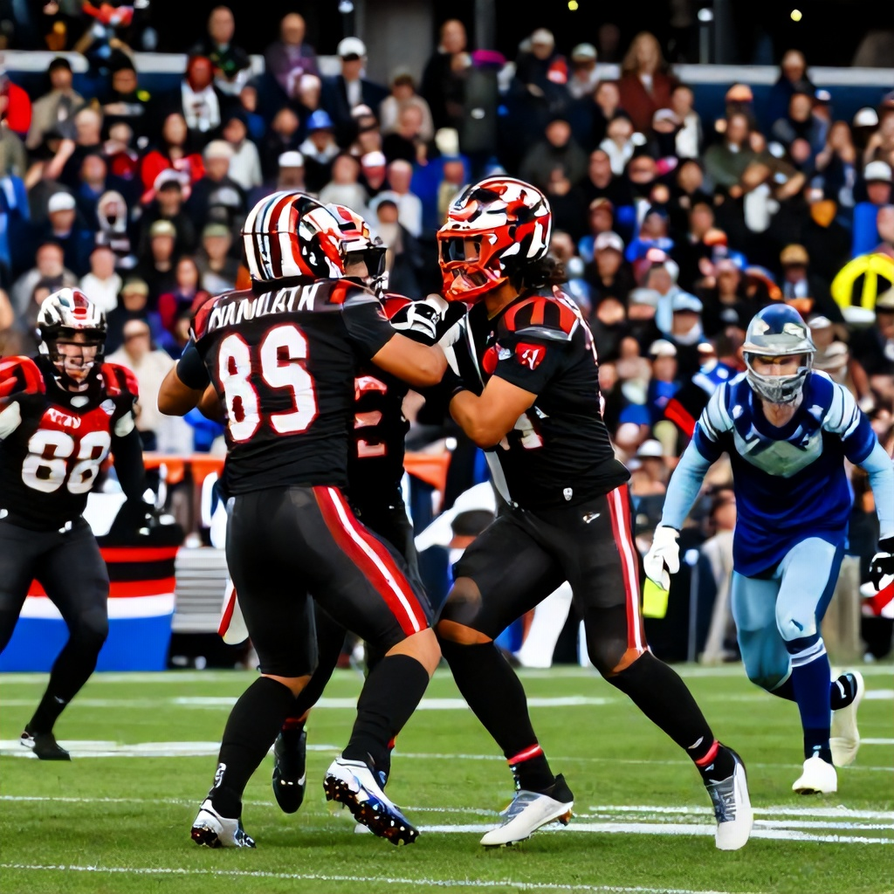

In a dramatic showdown that lived up to its billing as a potential crossover clash, the Hamilton Tiger-Cats delivered a masterclass in resilience and execution, defeating the Winnipeg Blue Bombers 37-27 on Friday night. The victory marked a pivotal moment in Hamilton’s season, while Winnipeg’s hopes of a strong playoff push took a hit.
A Battle of Attrition
From the opening whistle, both teams displayed their trademark grit. Winnipeg started strong, with quarterback Zach Collaros finding his receivers early and establishing a 10-0 lead in the first quarter. The Bombers’ offense moved the chains with confidence, and their defense kept Hamilton’s attack at bay. However, Hamilton’s red zone efficiency soon became a turning point.
Hamilton’s Comeback
The Tiger-Cats’ offense, led by quarterback Jake Maier, began to find their rhythm in the second quarter. A crucial 47-yard pass to wide receiver D.J. Williams and a pair of touchdown runs by running back Jalen Nailor helped shift momentum. By halftime, Hamilton had tied the game at 17-17, setting the stage for a thrilling second half.
The Fourth Quarter Drama
Winnipeg reasserted themselves in the third quarter, extending their lead to 24-17. However, Hamilton’s defense held firm, forcing a fumble that was recovered by linebacker Dane Jackson in the red zone. That turnover proved to be the game’s defining moment. The Tiger-Cats capitalized with a field goal and then scored a late touchdown to take a 30-24 lead entering the fourth quarter.
The Final Push
With time running out, Winnipeg drove down the field but were unable to score. Hamilton’s defense held strong, and a crucial interception by cornerback Marcus Williams sealed the victory. The final score of 37-27 was a testament to Hamilton’s ability to grind out a win under pressure.
Betting Takeaway
Pre-game odds favored Winnipeg slightly, with the Blue Bombers listed at -105 on the moneyline and the spread at -3. Despite the betting line, Hamilton’s performance demonstrated their ability to perform under pressure. For those who backed the Tiger-Cats, the result validates a solid pick, especially given their defensive resilience and offensive execution.
What’s Next?
This win puts Hamilton in a stronger position as they look ahead to their upcoming matchups. Meanwhile, Winnipeg will need to regroup quickly as they aim to stay competitive in the West Division race. With the CFL playoffs approaching, every game now carries significant weight.
The battle between these two franchises continues to be one of the most compelling in the league—this one ending with Hamilton claiming the upper hand.